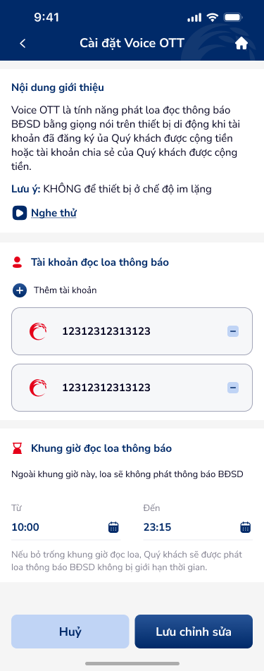

🔎 03 · Các vấn đề được phát hiện
🔴 Nghiêm trọng — Cần xử lý ngay
UXP-001
OTP bottom sheet (7203) thiếu hoàn toàn "Gửi lại OTP" button và countdown timer
Critical
| Hiện trạng | OTP bottom sheet (artboard 7203) thiếu hoàn toàn 'Gửi lại OTP' button và countdown timer — vi phạm DDL otp-input-1 spec. |
| Tác động | Voice OTT settings change requires OTP. No resend → người dùng stuck if OTP not received. No timer → silent expiry → rejection without explanation. |
| Nguyên tắc vi phạm |
|
| Đề xuất |
|
🟡 Quan trọng — Ưu tiên cao
UXP-002
Time picker fields "Từ"/"Đến" dùng Calendar icon thay vì Clock icon — semantic...
Major
| Hiện trạng | Time picker fields 'Từ'/'Đến' dùng Calendar icon thay vì Clock icon — semantic mismatch. Time input showing date icon. |
| Tác động | Calendar icon on time field = cognitive mismatch. người dùng kỳ vọng date picker, sees time options → confused. Clock icon = universal time symbol. |
| Nguyên tắc vi phạm |
|
| Đề xuất |
|
UXP-003
Số tài khoản hiển thị đầy đủ trên cả view (7201) và edit (7202) — không mask PII
Major
| Hiện trạng | Số tài khoản hiển thị đầy đủ trên cả view (7201: '212312312313') và edit (7202: '12312312313123') — PII không mask. |
| Tác động | Account numbers exposed on both view and edit screens. Edit screen = more dangerous: người dùng may screenshot settings for reference → PII leaked. |
| Nguyên tắc vi phạm |
|
| Đề xuất |
|
UXP-004
Thiếu inline error cho time picker khi "Từ" > "Đến" (invalid range)
Major| Hiện trạng | Time picker thiếu inline error khi 'Từ' > 'Đến' (invalid range). No validation for start > end time. |
| Tác động | người dùng sets 'Từ: 18:00' and 'Đến: 08:00' → invalid range submitted → server-side error or unexpected behavior. |
| Nguyên tắc vi phạm |
|
| Đề xuất |
|
UXP-005
Xóa tài khoản khỏi danh sách không có confirmation dialog — destructive action...
Major| Hiện trạng | Xóa tài khoản khỏi danh sách (icon −) không có xác nhận dialog — destructive action không protected. |
| Tác động | One-tap delete on account = irreversible. Accidental tap → account removed from Voice OTT → người dùng phải re-thêm and re-configure. |
| Nguyên tắc vi phạm |
|
| Đề xuất |
|
UXP-006
"Lưu chỉnh sửa" thiếu loading state sau khi submit — nguy cơ double-submit
Major| Hiện trạng | 'Lưu chỉnh sửa' thiếu trạng thái tải sau submit — no processing feedback. |
| Tác động | No loading → double-tap → potential duplicate API calls. Settings may apply twice or conflict. |
| Nguyên tắc vi phạm |
|
| Đề xuất |
|
⚪ Cải thiện — Nâng cao trải nghiệm
UXP-007
Nút "Đóng" trong success popup (7204) là text-link, thiếu button affordance
Minor| Hiện trạng | Nút 'Đóng' trong success popup (7204) là text-link — thiếu button tín hiệu tương tác. Looks like regular text. |
| Tác động | Text-link in popup = unclear CTAction. Button style needed for popup dismiss action. |
| Nguyên tắc vi phạm |
|
| Đề xuất |
|
UXP-008
Warning "Lưu ý: KHÔNG để thiế..." không đủ nổi bật
Minor| Hiện trạng | Warning 'Lưu ý: KHÔNG để thiết bị ở chế độ im lặng' — text không đủ nổi bật. Critical warning looks like regular body text. |
| Tác động | Device on silent = Voice OTT won't work. This warning is functionally critical but visually unremarkable → người dùng miss it. |
| Nguyên tắc vi phạm |
|
| Đề xuất |
|